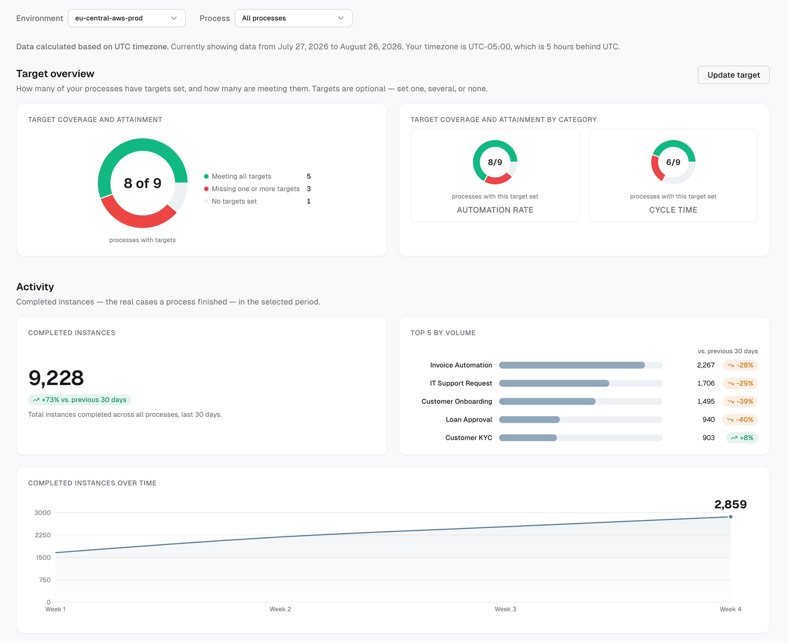

Overview
Camunda orchestrates business processes across an organization. Monitoring existed at the level of a single process, but nowhere could someone see the whole portfolio together and ask whether it was performing. The people who need that view are the ones accountable for the outcome — business owners, and the technical leads who run the processes for them.
The strategy team decided to build it and set the direction: lead with the cost savings AI brings — which is why it's still called the business value dashboard internally. I owned the validation: taking the proposed metrics to value engineers and customers, testing whether customers could realistically supply what those metrics required, and using the answer to define what phase 1 would be.
A note on detail: this work is in development. Screens are cropped prototype views built to test the design — not shipped UI — and use sample data. Findings are generalized; specific customers, figures, and internals are omitted.
Validation
Testing the proposed metrics against what customers could actually supply
The direction I inherited carried eleven metrics, most of them anchored to estimated hours saved and estimated cost saved. Value engineers and customers responded well to the concept in feedback sessions. Two problems surfaced anyway, and neither was a UI problem.
There was no shared cost model. We had designed for one rate inside an organization. Customers don't work that way: human cost splits by role, by team, by geography, and that split is exactly where the number gets contested internally. What we'd scoped as a settings field was a modelling problem, and the implementation cost climbed with it.
And without a target, the numbers meant nothing. Users raised this unprompted and repeatedly: a figure with nothing to measure it against tells them nothing about whether the process is doing well. But cost targets imply a system for setting, owning, and versioning them — and the release window couldn't hold that.
Both findings were scope problems, not design problems. Rather than absorbing them and shipping something quietly compromised, I brought them to the strategy team with the tradeoff already framed.
The Decision
Rescoping around what the system already knows
| Option | Approach | Tradeoff |
|---|---|---|
| Keep cost first | Hold the savings metrics; build a cost model and a target system to support them | Speaks the language the business cares about, but rests on inputs customers can't produce reliably — and doesn't fit the release |
| Process first (chosen) | Volume, automation rate, cycle time, agentic adoption — derived from execution data, with cost layered in later | One step further from the dollar figure, but every number is defensible, and what we do ask customers to enter is something they can answer |
We took the process-first set. The point wasn't only to ask customers for less; it was to make sure the effort we do ask for produces a number they trust rather than an estimate they'd have to defend internally. A confident cost figure built on a rate nobody in the organization agreed to is worse than a trend that can be verified — and value engineers put this artifact in front of customers, so it has to survive being questioned.

Design decision 1 — degrade, don't block
Customers were right that a bare number means nothing, but requiring a target would gate the whole report behind a setup step most users skip. So the report reads two ways at once: every metric compares against the same period previously by default, and a target upgrades it to read against the goal instead. Where targets are missing entirely, the section that would summarize them becomes a prompt that names what's absent — you can see the processes are running, not whether they're on track — rather than an empty card.

The same logic carries to the end of the report: once targets exist, the processes missing them are ranked and surfaced directly, so the page answers what needs attention rather than leaving the reader to work it out from the charts above.
Agentic cost follows the same rule in phase 2. Customers enter model token cost by hand; if they haven't, the report shows total token usage by model instead. Manual entry is a real cost to the user, which is why it isn't in phase 1 — but token pricing changes slowly enough that maintaining it by hand is a fair trade against an integration we don't have.
Design decision 2 — a definition of automation that survives regulation
We started with straight-through rate: the share of instances completing with no human touch. Our CPO raised the case that broke it — many regulated processes mandate a human review step by law, so they score zero forever no matter how much of the work is automated. I moved the formula to automated tasks over total tasks, human and automated combined. That measures the work rather than the instance, so a mandatory review step costs a process a few points instead of everything.
Because the definition is contestable, it's printed on the card itself rather than buried in documentation — anyone who questions the number can see how it was derived. That matters for an artifact whose whole job is to be trusted in a customer conversation.
It introduces its own flaw, and I'd rather name it: a customer can inflate the number by adding trivial automated tasks. My proposal for phase 2 is to show both — the task-level rate for a fair reading of automation, straight-through rate for how often a process runs end to end untouched. Neither is honest alone.
Impact
A version that fits the release
Phase 1 is still in development, so there's no usage data yet. The signals we plan to watch at launch are whether customers set targets at all, and whether value engineers reach for this in customer conversations — the two behaviors that would tell us the reporting is being used to make a case, not just to look at.
What's next
Closing the distance to value
Value engineers were direct in the second round of feedback: what we'd scoped reads closer to operational reporting than to the value story they'd been promised. That's fair, and it's the gap phase 2 exists to close — reintroducing cost, this time on a model customers can actually populate, alongside the fuller automation picture. We took phase 1 as the foundation that has to be trustworthy before anything can be priced on top of it.
The thing I'd sequence differently next time is smaller and closer to home: I validated a complete metric set before validating whether its inputs could be sourced. Testing the inputs first would have found the same answer in a fraction of the time.